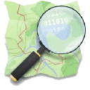

Services
Bridging between computation and the geospatial, I have much to offer.
Web-maps, maps for reports, spatial analysis, development, design, to UAVs & GPS in the field.
Programming & Development
- Process Automation
- Statistical Analysis
- GIS Extensions / Plugins
- Interactive Web-Maps in 2D & 3D
GIS Expertise
- Analysis
- Remote Sensing
- Documentation & Research
- Cartographic Print / Web Productions
Field Work
- GPS Surveying
- UAV Photogrammetry
- Teaching & Instruction
- Camping, Tramping, Ropework
Design
- Infographics
- UX/UI Creation
- Digital Image Manipulation
- Rapid Prototyping & Drafting
Specialist Knowledge



 This multifaceted challenge arose during my time in the Data Services team of Land Information New Zealand, the national geographic & survey institution.
This multifaceted challenge arose during my time in the Data Services team of Land Information New Zealand, the national geographic & survey institution.